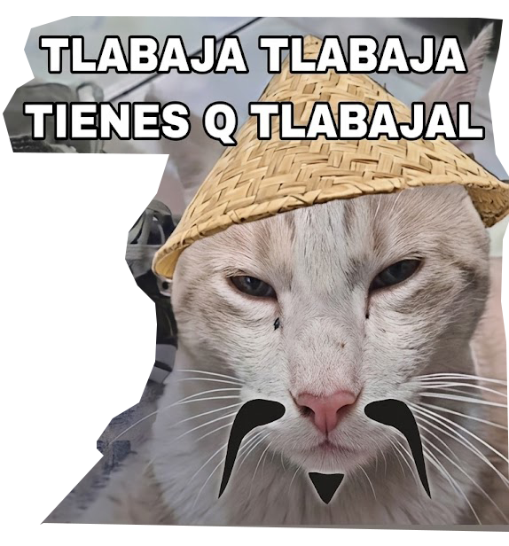

índice
↩
✕
← volver a la red
‹
▲
▼
›
las herramientas del amo
serie hipervincular algorítmica · elige un nodo raíz
cerrar índice

🐱
estoicismo para baddies
▲ ▼ ‹ ›
toca las flechas en pantalla para avanzar y girar
acércate
a un holograma flotante para abrirlo
toca
las palabras subrayadas para revelar el poema
ingresar
por @awitadeluz